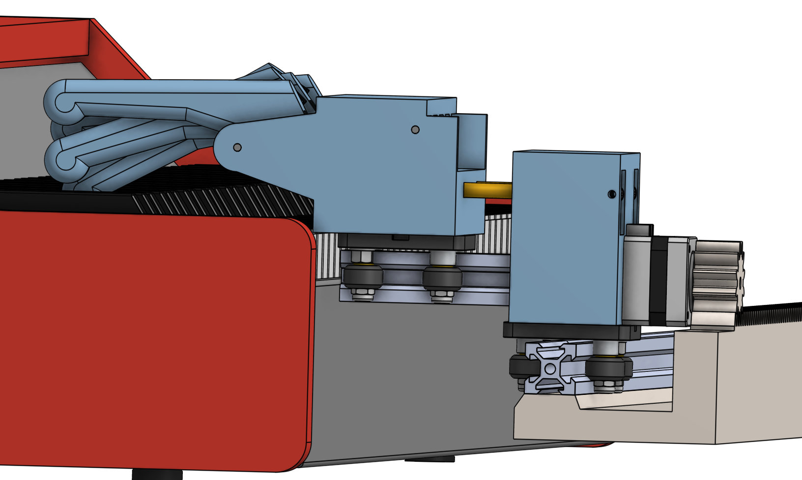
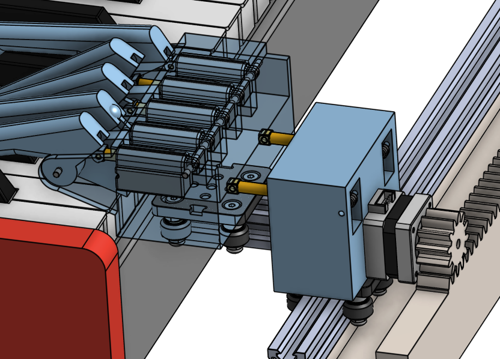
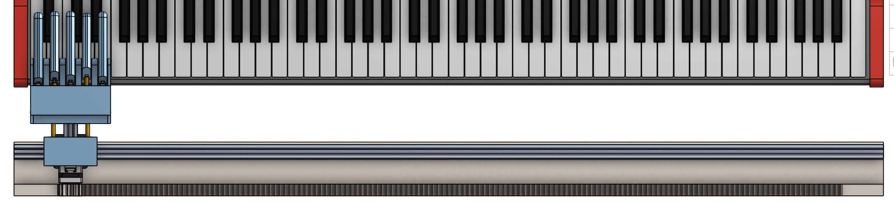

As part of ongoing robotics work within the Autonomous Robotics Club, one of the teams was developing a piano-playing robotic hand. While I was not directly assigned to that subgroup, I was interested in the mechanism design challenge and independently developed a rapid CAD prototype to explore how such a system could be built.
The goal of this prototype was to understand how a compact actuation system could replicate human finger motion with enough precision to press piano keys reliably. I focused on simplifying the mechanism into a manufacturable design that could realistically be 3D printed and assembled quickly.
The design also incorporates a rail-based motion system I was exploring in parallel. It features 20mm linear rails and a V-wheel gantry, along with forward-backward and side-to-side linear movement. The side-to-side axis is driven by a stepper motor (similar to what is used in 3D printers), though I expect the control and tuning could be a little annoying depending on setup and friction.
From a manufacturing standpoint, the model should be suitable for 3D printing or progression toward assembly, with only minor fixes needed around stepper motor mounting, 3D printing tolerances, and gantry alignment.
However, from a functional design perspective, the current mechanism is not fully ideal for a piano hand application. The finger design does not provide enough degrees of freedom, and the resulting key press interaction would likely be inconsistent for accurate piano actuation.
This model was developed in approximately 1–2 days as a fast iteration exercise to explore feasibility before more advanced actuation and control systems are introduced.
The overall prototype can be seen below:



Socials